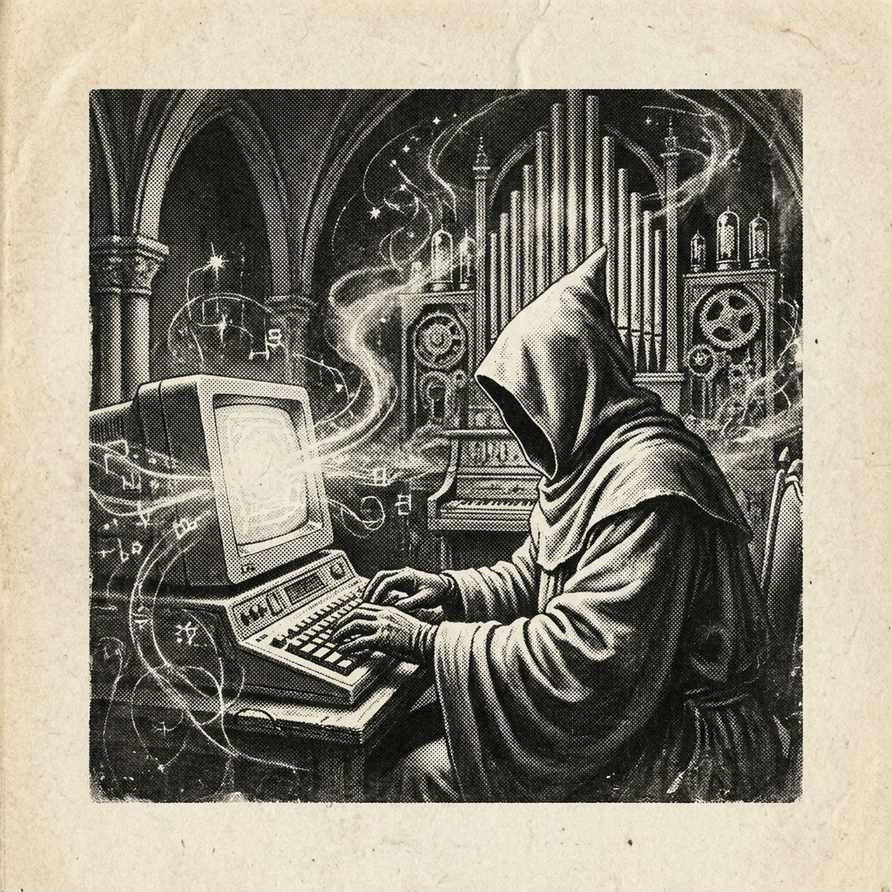

Morning Edition
6:00 AM CDTFinance & Markets
Markets Open With an Iran-Risk Warning Light
U.S. stock futures dipped and world shares were mixed as investors watched the latest Iran-war negotiations, while oil rose after President Trump rejected Iran’s response to a ceasefire proposal. The market readout: risk appetite is still online, but energy and rates are injecting latency into every trade.
— Sources: CNBC and Reuters via Google News Business feed; BBC, “Oil prices jump after Trump dismisses Iran proposal to end war”, May 11, 2026Private Credit Gets a Redemption-Pressure Check
Private-market headlines clustered around transparency, default pressure, and fund liquidity: InvestmentNews flagged a retail reset in private markets, ABF Journal tracked redemption and default stress in middle-market debt, and WSJ/Barron’s reported Apollo talks to sell a $3 billion private-credit fund.
— Sources: InvestmentNews, ABF Journal, WSJ, and Barron’s via Google News private-markets feed, May 11, 2026Discount Grocers Become the Consumer Dashboard
NPR reports budget-conscious shoppers are feeding a boom in discount groceries and warehouse clubs. It is not just retail trivia; it is a household-cash-flow metric with shoes on, showing where inflation fatigue is compiling into behavior.
— Source: NPR, “Budget-conscious shoppers are feeding a boom in discount groceries”, May 11, 2026World & US
Iran Peace Proposal Rejected; Strait Risk Stays Hot
BBC reports Trump called Iran’s response to a U.S. proposal “totally unacceptable,” with Iran reportedly seeking blockade relief, recognition over the Strait of Hormuz, and compensation. The geopolitical process has not crashed, but it is throwing hard errors through shipping, oil, and diplomacy.
— Source: BBC, “Trump calls Iran response to US proposal to end war ‘totally unacceptable’”, May 11, 2026Hantavirus Cruise Evacuation Reaches U.S. and France
U.S. and French nationals tested positive for hantavirus after leaving the MV Hondius, with an American flown to Nebraska and a French woman isolating in Paris. It is a public-health story with travel, quarantine, and contact-tracing all braided together.
— Sources: BBC, “US and French nationals test positive for hantavirus after leaving ship”; NPR, U.S. cruise-passenger coverage, May 10–11, 2026U.S. Morning Stack: Research Funding, Laredo Boxcar Deaths, and Political Friction
NPR says some researchers view restored federal funding as too little, too late; U.S. feeds also tracked six people found dead in a Union Pacific boxcar in Laredo and fresh California primary-system anxiety. Domestic systems check: science, migration, and elections all need careful incident response.
— Sources: NPR, federal research funding coverage; CNN/WOAI and Los Angeles Times via Google News U.S. feed, May 11, 2026
The Monday Scrying Lens: a gothic code-wizard boots the cathedral server and lets tomorrow shimmer in silver ink.
"Pace the spell, or even good magic becomes technical debt."— The Developer’s Almanac
Sagittarius Horoscope
Justin, today’s Sagittarius reading says promising news or momentum may arrive through work you have already been tending — but the star-note is pacing. Year-of-the-Rat wisdom agrees: be clever, move fast where it matters, then preserve enough charge for tomorrow’s build. Developer spell: accept the raise in energy, not the temptation to overload the sprint. Lucky hex: #6d28d9. Lucky command: git stash push -m "protect-focus". ✨
Tech, AI, Space & Crypto
-
Robotics Data Gets Its TSMC Metaphor
TechCrunch reports Samsung, Hyundai, and LG are backing Config, a startup pitching itself as the robotics data backbone. Physical AI keeps shifting from demo videos to supply-chain architecture: the next moat may be clean, reusable robot data.
— Source: TechCrunch, “Korea’s biggest manufacturers back Config, the TSMC of robot data”, May 11, 2026 -
OpenAI and Anthropic Face Policy, Safety, and Reputation Scrutiny
AI feeds show EU Commission talks with OpenAI and Anthropic, a push for safety reviews before U.S. government contracts, and TechCrunch coverage of Anthropic arguing fictional “evil AI” portrayals affected Claude behavior. The governance layer is no longer optional middleware.
— Sources: Yahoo/Reuters and KELO-AM via Google News AI feed; TechCrunch, Anthropic coverage, May 10–11, 2026 -
Space Logistics Keep Docking, Launching, and Arm-Building
SpaceNews says China’s Tianzhou-10 cargo craft reached Tiangong, ESA and JAXA finalized an Apophis asteroid mission agreement, and MDA Space continues work on the lunar Gateway robotic arm. Quiet lesson: space progress is mostly disciplined logistics wearing a star cloak.
— Sources: SpaceNews, Tianzhou-10, Apophis mission, and Gateway robotic arm, May 9–11, 2026 -
Crypto Whipsaws While Tokenized Finance Keeps Raising
CoinDesk reports bitcoin whipsawed around the CME open as Iran tensions pressured markets, while Circle reportedly raised $222 million for its Arc blockchain token at a $3 billion valuation. Volatility is the front-end animation; institutional rails are still the backend job.
— Sources: CoinDesk, bitcoin/Iran markets and Circle Arc token sale, May 11, 2026
Active Reminders
- Test reminder from Nemu (Jan 29)
- Connect Nemu to Notion (Feb 1)
- Research VPN/proxy services for secure agent browsing (Feb 1)
- Create security OpenClaw bot (Feb 2)
- Plaid Integration Research (Feb 4)
- Build Oomi iOS and Android app to connect Nemu to data (Feb 15)